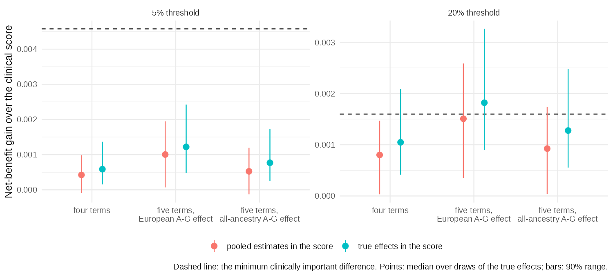
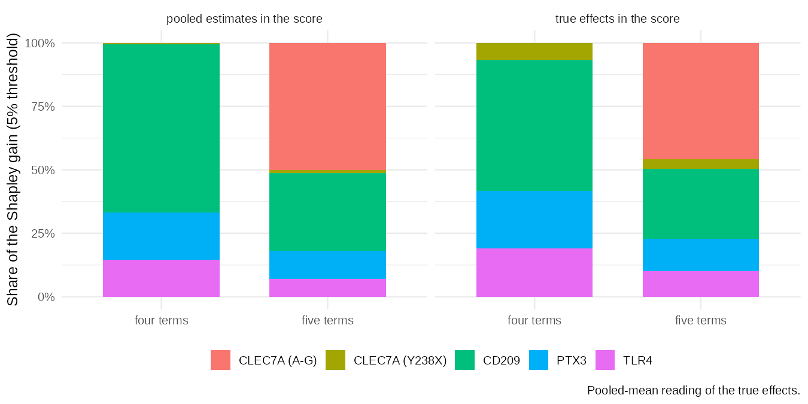
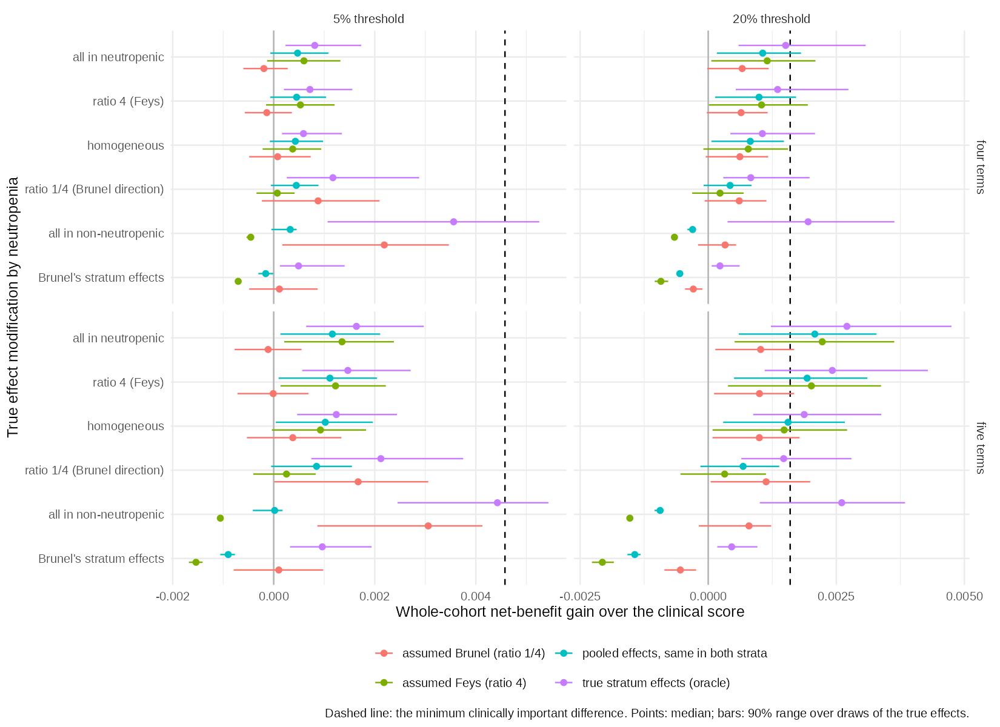

Code
source("_setup.R")
rd <- function(f) read.csv(file.path("output", f))Abstract, introduction, methods and results: working draft
This is a first draft of the write-up (phase 7). Every number comes from the files in output/ as of 19 October 2026, after the corrections recorded in addenda 16 to 21 of the decision record. The evidence is still provisional:
The discussion, references, author list, ethics statement and data-availability statement are not yet written. Citations are informal author–year placeholders, and [ref] marks a statement that still needs a reference.
source("_setup.R")
rd <- function(f) read.csv(file.path("output", f))Background. Variants in the innate immune genes PTX3, CLEC7A (dectin-1), TLR4 and CD209 (DC-SIGN) are repeatedly reported as associated with invasive aspergillosis, and adding genotype to clinical risk scores has been proposed. Whether doing so would change clinical decisions, rather than improve discrimination, has not been tested.
Methods. We did a pre-specified simulation study of the value of host genetic information. The baseline was a seven-predictor clinical score for proven or probable invasive mould disease (IMD) within 60 days, refit on 4,078 haematology admissions in 1,945 patients (Bologna, 2007–2016; 133 events, 3.3%). A systematic review supplied the genetic effects (831 records screened, 63 studies extracted). Effects for four haplotype terms were mapped to a common per-copy scale and pooled with Bayesian random-effects models. The net-benefit gain over the clinical score was computed exactly over all clinical profiles and genotype combinations, for 2,000 draws from the pooled posteriors. The primary endpoint was the gain at a 5% risk threshold. It was judged against a pre-specified minimum clinically important difference (MCID) of 20% more true cases at no extra false positives (+0.00458). Secondary analyses added a second CLEC7A haplotype, effect modification by neutropenia, donor genotype after allogeneic transplantation, and a sweep of 4,000 hypothetical genetic architectures.
Results. Pooled odds ratios per copy of the risk haplotype class (90% credible interval) were 1.35 (0.99 to 1.81) for PTX3, 0.84 (0.48 to 1.48) for CLEC7A Y238X, 1.44 (0.77 to 2.69) for TLR4 and 1.80 (1.14 to 2.73) for CD209. With the true effects in the score, the four-term panel raised net benefit at 5% by a median of +0.00059 (90% range 0.00015 to 0.00137). That is about an eighth of the MCID: 1.2 extra true cases per 1,000 admissions, against 4.6 required. No draw reached the MCID, and 1.3% did when between-study heterogeneity was propagated. The area under the ROC curve (aROC) rose from 0.857 to 0.870. A second CLEC7A haplotype (OR 1.86, three studies) doubled the gain to +0.00122, but at most 3.3% of draws reached the MCID. In simulated studies of the cohort’s size, the sampling standard deviation of the observed gain was as large as the expected gain. Neutropenic admissions (28% of admissions, 80% of events) supplied about four-fifths of the gain. In the architecture sweep, no panel of up to 20 independent loci with per-allele odds ratios of 1.5 or less reached the MCID. At an odds ratio of 2.0, seven to nine common loci were needed.
Conclusions. On the published evidence, genotype at these four genes is unlikely to change decisions at the 5% threshold in haematological inpatients. A panel that could change them would need much larger effects than candidate-gene studies report, or many more loci. A genotyped, neutropenia-stratified study of this cohort’s size could test whether genetic effects depend on the inflammatory state of the host.
Invasive mould disease, mostly invasive aspergillosis, remains a major cause of morbidity and death in patients with haematological malignancies [ref]. Decisions about antifungal prophylaxis, diagnostic work-up and pre-emptive treatment depend on how much risk a patient is thought to carry. Clinical risk scores formalise that judgement. Stanzani and colleagues derived a score from seven routinely recorded host factors in 4,127 admissions to the haematology unit in Bologna (Stanzani et al., J Infect 2019). It reached an aROC of 0.85 for proven or probable IMD within 60 days and defines high risk at a predicted probability of 5%.
Host genetics might add information that clinical factors do not capture. Candidate-gene studies have reported associations between invasive aspergillosis and variants in genes of innate antifungal immunity: the long pentraxin PTX3, the β-glucan receptor dectin-1 (CLEC7A), Toll-like receptor 4 and DC-SIGN (CD209) [refs]. After allogeneic transplantation the reconstituted innate immune system is donor-derived, which has led to proposals to use donor genotype to stratify transplant recipients (Cunha et al., N Engl J Med 2014). These findings have prompted proposals for genetically augmented risk scores.
Two problems make such proposals hard to judge. First, the evidence is small and heterogeneous. Linked variants in the same gene are often reported as separate findings, and adding them to a model as independent terms counts the same signal more than once. An earlier analysis of this question did that and reported a net reclassification improvement of 22.5%. Second, gains in discrimination or reclassification do not show whether anyone would be managed differently. Decision-curve analysis does: it counts true and false positives at a clinically chosen risk threshold, weighted by the harm-to-benefit ratio that the threshold implies (Vickers and Elkin, Med Decis Making 2006).
We therefore framed the question as one of value of information, not of prediction. Under what combinations of effect size, risk-allele frequency and linkage structure would host genetic information change clinical decisions for IMD in haematological patients, and is the published evidence anywhere near those combinations? We fixed the size of a clinically important change before any genetic result existed, so that a negative answer would be a finding and not a failure. Our objectives were to:
This is a simulation study that combines individual admission-level clinical data with a meta-analysis of the published genetic evidence. The design is summarised below in the ADEMP structure for simulation studies (Morris, White and Crowther, Stat Med 2019). Design decisions were recorded before any genetic result existed and locked at a git tag (prespec-lock, commit 90e3656, 17 October 2026). Every later change is a dated addendum to the decision record. Each addendum states what had been seen when the change was made. Two changes after the lock affected the primary analysis. In both, no genetic result had yet been computed:
| ADEMP element | This study |
|---|---|
| Aims | Decision value of host genotype added to a clinical IMD score; the architectures that would be needed |
| Data-generating mechanisms | Clinical profiles from the observed cohort; genotypes in Hardy–Weinberg equilibrium at gnomAD non-Finnish European frequencies; true genetic effects drawn from the pooled posteriors under two readings; architecture sweep on a grid |
| Estimand | Gain in decision-curve net benefit over the clinical score, at thresholds of 5% (primary) and 20% (secondary) |
| Methods compared | Clinical score alone; clinical score plus a genetic score with the true effects (ceiling) or the pooled estimates (realised) |
| Performance measures | Median gain and 90% range over draws; share of draws reaching the MCID; extra true cases per 1,000 admissions; aROC |
The clinical data are the admission-level derivation data of the Stanzani score, from the BOSCORE registry of the haematology unit in Bologna (admissions 2007–2016). The outcome is proven or probable IMD by EORTC criteria within 60 days of admission. The seven predictors are:
The published analysis file has 4,127 rows. These are exactly the rows of the parent registry extract that are complete on the seven items. Forty-nine admission numbers appeared twice, each time as an event row plus a non-event row with the same patient and predictor profile. We confirmed these pairs as a recording artefact and removed the duplicate row. The base cohort is therefore 4,078 unique admissions in 1,945 patients, with 133 events (3.26%). Only counts and pseudonymised fields were used, and no patient-level data are in the repository. [Ethics approval and data-access statement to add.]
The baseline is a maximum-likelihood logistic regression of the outcome on the seven predictors in the base cohort. Its uncertainty was handled as follows:
The baseline is held fixed from here on. The joint distribution of clinical risk is the observed distribution of the 128 possible predictor profiles, 75 of which occur. Three alternatives were kept as sensitivity analyses:
Search and extraction. We searched PubMed (263 records; search date [to confirm]) and Embase (568 records; 8 October 2026) for studies of host genetic variants and invasive fungal disease. The searches gave 831 unique records. Of the 81 studies included, 63 had a usable source document. Twelve had no full text available, and six links pointed to the wrong document. The extraction yielded 2,008 variant rows. Of these, 970 were usable: 823 effect estimates with both confidence limits and an orientable effect allele, 115 complete 2×3 genotype tables and 32 complete 2×2 tables. [Describe the extraction process and the round-2 human verification.]
Every row whose comparison text had no reference marker was checked against the source tables. That covered seven studies. The two reversals found (Herrero-Sanchez 2018, Fischer 2016) and one duplicated row read in the opposite direction (Sainz 2012) were corrected and logged with their evidence (43 corrected rows in all).
Panel. Candidate variants needed at least three meta-analysable studies. Within each gene, pairwise linkage was measured in phased 1000 Genomes phase 3 European haplotypes (503 samples). Haplotype frequencies were rescaled to gnomAD v4 non-Finnish European allele frequencies by iterative proportional fitting. Linked SNPs were collapsed into one haplotype term per gene. Each term is an additive per-copy effect of a risk haplotype class:
TLR9 rs352140 was dropped because only one study was usable. IL10 rs1800896 and IFNG rs2069705 were dropped because they had one and two studies respectively, and the two IFNG studies disagreed in direction. Herrero-Sanchez 2018 was excluded from the primary analysis because its main endpoint included colonisation.
Mapping and pooling. Each study’s contrast (allelic, dominant, recessive or genotype counts) was converted to a log odds ratio per copy of the risk class. The conversion solves a haplotype model: additive on the log-odds scale, haplotype pairs in Hardy–Weinberg equilibrium, case–control sampling. Standard errors come from the delta method. One effect was taken per study. The primary analysis used recipient genotype, the odds-ratio scale and whole-cohort analyses. Hazard-ratio studies were added only as a sensitivity analysis, or as a labelled fallback where fewer than three odds-ratio studies existed. Effects were pooled with a Bayesian random-effects model, μ ~ N(0, 1) and τ ~ half-normal(0.5), evaluated on a grid.
Second CLEC7A parameter. The three CLEC7A haplotypes carry a second effect: the A-G haplotype (G at rs7309123 on the non-Y238X background) against A-C. rs7309123 is a C/G palindrome. Its strand was therefore resolved study by study, from control allele frequencies, primer sequences and full texts. The primary estimate uses the three strand-resolved studies of European or Turkish cohorts. Two East Asian studies were mapped through 1000 Genomes East Asian haplotype frequencies and entered a sensitivity analysis. This parameter was not part of the pre-specified four-term panel. The four-term analysis is therefore primary, and the five-term analysis is secondary.
Each patient receives one genotype, which is shared by all of their admissions. The dosage of each risk class (0, 1 or 2) follows Hardy–Weinberg equilibrium at the gnomAD frequencies. Genotype is independent across terms and of the clinical profile. The true risk of an admission is
\[ \operatorname{logit} p = \eta_{\text{clin}} + \sum_j \beta_j g_j + a, \]
where \[\eta_{\text{clin}}\] is the baseline linear predictor and \[g_j\] the dosage of term \[j\]. The constant \[a\] recentres the genetic contribution so that the prevalence stays at 3.26%. A change in net benefit therefore reflects discrimination, not a shift in the event rate.
True effects \[\beta_j\] were drawn 2,000 times from each term’s pooled posterior under two readings:
Three scores were compared under the same truth:
Net benefit at threshold \[p_t\] is
\[ \text{NB}(p_t) = \frac{\text{TP}}{n} - \frac{\text{FP}}{n}\cdot\frac{p_t}{1-p_t}. \]
The gain is the net benefit of a genetic score minus that of the clinical score. It was computed exactly over the 128 clinical profiles and all genotype combinations (81 for four terms), with no patient-level sampling. A patient-level simulation on a 100-fold replicated cohort reproduced the exact gain (0.00041 against 0.00040 at 5%).
MCID. Before any genetic result, the minimum clinically important difference was defined as 20% more true cases at no increase in false positives. That is \[0.2 \times \text{TP}_{\text{clin}}/n\]. The 5% threshold, the high-risk cut-off of the original score, is primary. The 20% threshold is secondary and does not enter the headline conclusion. We report three quantities:
Analyses used R 4.6.1, with package versions pinned by renv. The code, the test suite and every summary output are public at https://github.com/lewis-id-lab/PROSE. Scripts 01 to 28 reproduce the results in order.
The base cohort has 4,078 admissions in 1,945 patients (2.10 admissions per patient) and 133 events (3.26%). The refit baseline’s odds ratios ranged from 2.15 for uncontrolled malignancy to 7.28 for prior mould disease. Every published coefficient lies inside the refit’s 90% bootstrap interval. The aROC was 0.858 apparent and 0.853 after optimism correction, and the calibration slope was 0.97. On the same admissions, the published equation under-predicted slightly (3.06% against 3.26%).
At the 5% threshold the refit baseline flags 15.7% of admissions, with 22.9 true and 133.8 false positives per 1,000. Its net benefit is 0.0158. The MCID is therefore +0.00458 (patient bootstrap 90% interval 0.00387 to 0.00566), or 4.6 extra true cases per 1,000 admissions at no extra false positives. At 20% the MCID is +0.00160. Under the published equation the MCIDs would be +0.00404 and +0.00113.
Table 1 shows the pooled effects. Each term rests on three to five studies. CD209 is the only term in the four-term panel whose interval excludes an odds ratio of 1. PTX3 is borderline, with a 5.5% posterior probability that its effect is below zero. CLEC7A Y238X is centred below 1. The second CLEC7A parameter, A-G against A-C, is estimated at an odds ratio of 1.86 per copy. Its interval excludes 1 under every strand assumption (1.5 to 1.9).
The two East Asian studies point the other way (difference from the European estimate −1.19 on the log scale, SE 0.31, P = 0.0001). Adding them gives 1.28 (0.79 to 1.95). The linkage of rs7309123 with rs3901533 in phased 1000 Genomes data explains this pattern: it is the reversal expected when a tag SNP sits on different haplotype backgrounds in the two ancestries.
pool_row <- function(file, term, risk_class, freq) {
rd(file)[1, ] |>
transmute(Term = term, `Risk class` = risk_class, Frequency = freq, Studies = k,
OR = or, `90% CrI` = sprintf("%.2f to %.2f", or_lo, or_hi), tau = tau)
}
bind_rows(
pool_row("ptx3_h2_pooled.csv", "PTX3", "h2 (A at rs2305619)", 0.482),
pool_row("clec7a_pooled.csv", "CLEC7A", "Y238X (C at rs16910526)", 0.077),
pool_row("tlr4_pooled.csv", "TLR4", "G-T (rs4986790, rs4986791)", 0.061),
pool_row("cd209_pooled.csv", "CD209", "G at rs4804800", 0.125),
pool_row("clec7a_second_pooled.csv", "CLEC7A, second parameter (secondary)", "A-G (G at rs7309123, non-Y238X)", 0.349)
) |>
gt() |>
fmt_percent(Frequency, decimals = 1) |>
fmt_number(c(OR, tau), decimals = 2)| Term | Risk class | Frequency | Studies | OR | 90% CrI | tau |
|---|---|---|---|---|---|---|
| PTX3 | h2 (A at rs2305619) | 48.2% | 5 | 1.35 | 0.99 to 1.81 | 0.17 |
| CLEC7A | Y238X (C at rs16910526) | 7.7% | 4 | 0.84 | 0.48 to 1.48 | 0.25 |
| TLR4 | G-T (rs4986790, rs4986791) | 6.1% | 4 | 1.44 | 0.76 to 2.69 | 0.27 |
| CD209 | G at rs4804800 | 12.5% | 3 | 1.80 | 1.14 to 2.73 | 0.21 |
| CLEC7A, second parameter (secondary) | A-G (G at rs7309123, non-Y238X) | 34.9% | 3 | 1.86 | 1.26 to 2.63 | 0.17 |
Table 2 and Figure 1 show the main results. With the true effects in the score, the four terms raised net benefit at the 5% threshold by a median of +0.00059 (90% range 0.00015 to 0.00137). That is 1.2 extra true cases per 1,000 admissions, against the 4.6 the MCID requires. The gain came with extra false positives: the share flagged rose from 15.7% to 16.9%. No draw reached the MCID under the pooled-mean reading, and 1.3% did under the predictive reading. With the pooled estimates in the score the gain was +0.00042 (−0.00009 to 0.00098), and no draw reached the MCID. The expected aROC rose from 0.857 to 0.870 with the ceiling score and to 0.867 with the realised score.
At the secondary 20% threshold the ceiling score gained +0.00105 and reached the MCID of +0.00160 in 16% of draws (36% under the predictive reading). The realised score reached it in 3% of draws (9% under the predictive reading).
four <- rd("genetic_layer_summary.csv") |>
filter(scenario != "baseline") |>
transmute(panel = "Four terms (primary)", truth, scenario, threshold,
gain = delta_nb, lo = delta_lo, hi = delta_hi, extra = extra_cases_per_1000, p = p_meets_mcid, auc)
five <- rd("clec7a_second_layer_summary.csv") |>
filter(second_parameter == "estimated") |>
transmute(panel = "Five terms, CLEC7A A-G added (secondary)", truth, scenario, threshold,
gain, lo, hi, extra = extra_cases_per_1000, p = p_meets_mcid, auc)
bind_rows(four, five) |>
mutate(panel = factor(panel, unique(panel)),
Threshold = paste0(threshold * 100, "%"),
Truth = truth,
Score = if_else(scenario == "ceiling", "true effects (ceiling)", "pooled estimates (realised)"),
range = sprintf("%.5f to %.5f", lo, hi)) |>
arrange(panel, threshold, Truth, Score) |>
select(panel, Threshold, Truth, Score, gain, range, extra, p, auc) |>
gt(groupname_col = "panel") |>
fmt_number(gain, decimals = 5, pattern = "+{x}") |>
fmt_number(extra, decimals = 1) |>
fmt_number(auc, decimals = 3) |>
fmt_percent(p, decimals = 1) |>
cols_label(gain = "Median gain", range = "90% range", extra = "Extra true cases per 1,000",
p = "Draws reaching MCID", auc = "aROC")| Threshold | Truth | Score | Median gain | 90% range | Extra true cases per 1,000 | Draws reaching MCID | aROC |
|---|---|---|---|---|---|---|---|
| Four terms (primary) | |||||||
| 5% | mean | pooled estimates (realised) | +0.00042 | -0.00009 to 0.00098 | 1.2 | 0.0% | 0.867 |
| 5% | mean | true effects (ceiling) | +0.00059 | 0.00015 to 0.00137 | 1.2 | 0.0% | 0.870 |
| 5% | predictive | pooled estimates (realised) | +0.00043 | -0.00030 to 0.00136 | 1.2 | 0.0% | 0.867 |
| 5% | predictive | true effects (ceiling) | +0.00079 | 0.00018 to 0.00276 | 1.4 | 1.2% | 0.872 |
| 20% | mean | pooled estimates (realised) | +0.00080 | 0.00003 to 0.00147 | 2.8 | 2.8% | 0.867 |
| 20% | mean | true effects (ceiling) | +0.00105 | 0.00042 to 0.00209 | 2.7 | 16.0% | 0.870 |
| 20% | predictive | pooled estimates (realised) | +0.00080 | -0.00034 to 0.00183 | 2.8 | 9.3% | 0.867 |
| 20% | predictive | true effects (ceiling) | +0.00129 | 0.00044 to 0.00371 | 3.0 | 35.8% | 0.872 |
| Five terms, CLEC7A A-G added (secondary) | |||||||
| 5% | mean | pooled estimates (realised) | +0.00100 | 0.00007 to 0.00195 | 1.3 | 0.0% | 0.873 |
| 5% | mean | true effects (ceiling) | +0.00122 | 0.00048 to 0.00242 | 1.4 | 0.1% | 0.876 |
| 5% | predictive | pooled estimates (realised) | +0.00104 | -0.00050 to 0.00252 | 1.3 | 0.2% | 0.872 |
| 5% | predictive | true effects (ceiling) | +0.00150 | 0.00050 to 0.00414 | 1.6 | 3.3% | 0.879 |
| 20% | mean | pooled estimates (realised) | +0.00151 | 0.00035 to 0.00259 | 3.3 | 45.2% | 0.873 |
| 20% | mean | true effects (ceiling) | +0.00182 | 0.00090 to 0.00326 | 3.6 | 63.2% | 0.876 |
| 20% | predictive | pooled estimates (realised) | +0.00151 | -0.00035 to 0.00307 | 3.3 | 45.6% | 0.872 |
| 20% | predictive | true effects (ceiling) | +0.00216 | 0.00091 to 0.00517 | 4.0 | 72.0% | 0.879 |

Adding the A-G haplotype made CLEC7A an active term and roughly doubled the gain: +0.00122 (0.00048 to 0.00242) at 5% with the ceiling score, and +0.00100 with the realised score. The 5% MCID stayed out of reach, reached in 0.1% of draws under the pooled-mean reading and 3.3% under the predictive reading. At 20% the ceiling score reached the MCID in 63% of draws (72% under the predictive reading) and the realised score in 45%. With the all-ancestry estimate of the second parameter the gain at 5% was +0.00077, and 28% of draws reached the 20% MCID.
A study of the cohort’s size would observe the gain with a standard deviation as large as the expected gain or larger: 0.00064 to 0.00131 at 5%. With the effects fixed at the pooled medians, the observed gain at 5% averaged +0.00039 (SD 0.00064). It was above zero in 72% of studies and never reached the MCID. With the effects drawn from the posteriors, the observed gain was positive in 69% to 82% of studies and reached the MCID in at most 1.6%. Even with every effect at the 95th percentile of its posterior, the ceiling score’s observed gain reached the 5% MCID in 1.0% of studies (78% at 20%).
The clinical correlation structure moved the median gain by at most 0.00016 (between-member SD 0.00007 to 0.00028). The published-equation and 4,127-row cohorts gave gains at 5% of +0.00059 to +0.00064 (ceiling, pooled mean). In those settings at most 1.8% of draws reached that setting’s MCID. The settings differed mainly at 20%, where the published equation sets a lower bar (+0.00113).
In the four-term panel, CD209 supplied 51.7% of the Shapley gain at 5% (ceiling, pooled mean). PTX3 supplied 22.6%, TLR4 19.0% and CLEC7A 6.7% (Figure 2). CD209 has the largest pooled effect but rests on three studies. With the second CLEC7A parameter the ranking changed. CLEC7A supplied 49.7%, almost all of it through the common A-G haplotype (45.9%), and CD209 fell to 27.5%, PTX3 to 12.8% and TLR4 to 10.0%. CLEC7A’s share stayed between 44.8% and 52.8% in every combination of cohort, correlation structure, reading, score and threshold. It was the largest single contributor in 64% to 69% of draws.

Neutropenic admissions were 28% of the cohort (1,157), with an event rate of 9.2% and 106 of the 133 events (80%). With homogeneous effects, the gain per admission was 11 times larger in neutropenic admissions (+0.00170 against +0.00015 at 5%). That stratum supplied 81% of the whole-cohort gain at 5% and 96% at 20%. With five terms it supplied 83% and 95%, and 78% to 84% at 5% across every sensitivity setting.
The only stratified evidence, Brunel 2018, points against H_F. Mapped to the per-copy PTX3 h2 scale, its effect was +1.17 in non-neutropenic and −0.13 in neutropenic courses for rs2305619 (difference −1.30, SE 0.72, P = 0.07). For rs3816527 the difference was −1.99 (SE 1.01, P = 0.049). These estimates come from 212 courses and 26 events, with neutropenia defined at presentation.
Across scenarios (Figure 3), the 5% MCID came within reach only when the whole effect was placed in non-neutropenic admissions. There the oracle score gained +0.00356, reaching the MCID in 18% of draws. With five terms it gained +0.00443 and reached the MCID in 42% of draws. The common score with pooled estimates lost little under an H_F truth (+0.00047 against an oracle +0.00081 at 5%). It was harmful if Brunel’s stratum effects held (−0.00016 with four terms, −0.00090 with five). A score built on H_F was the most harmful when the truth ran the other way.
In simulated studies of the cohort’s size, the interaction test detected the effect modification more often than we had predicted. With five terms and pooled-median effects, it reached P < 0.05 in the true direction as follows:
| scenario | power |
|---|---|
| all of the effect in neutropenic admissions | 90% |
| ratio of 4 | 62% |
| Brunel-sized modifications | ≥ 99.9% |
The false-positive rate was 5.1%. The corresponding four-term figures were 59%, 34% and 95% to 96%. Of the five predictions recorded before the run, two held, one mostly held, one was not borne out, and one was wrong: we had predicted that the test would be underpowered.

The allogeneic stratum held 272 admissions and 43 events (32% of events). The baseline already flagged 77% of these admissions at 5%. Donor genotype added 0.4 to 1.4 extra true cases per 1,000 transplant admissions at 5%, against about 30 needed for the stratum’s MCID, and 14 to 28 at 20%, against about 12 needed. Whole-cohort, the gain at 5% was at most +0.0001. The donor evidence is one study each for PTX3 and CLEC7A, two for TLR4 and none for CD209. A smoothed version of the stratum’s profile distribution gave the same conclusions.
Of the 4,000 architectures, 46% reached the 5% MCID and 77% reached the 20% MCID (Figure 4). The pattern was:
The four-term panel corresponds to about 7 loci of odds ratio 1.3 at frequency 0.3, and would need to be roughly eight times stronger to reach the 5% MCID. Architectures near the frontier depended on the unpublished correlation structure (gain over MCID varied by about 15% across ensemble members). Those well inside or outside it did not.
With estimated weights, a score kept a median of 96% of the ceiling gain at a per-locus precision of σ = 0.10. It kept 89% at σ = 0.20 and 58% at σ = 0.40, which is the range of precision of the present pooled estimates (0.18 to 0.38). At those precisions, between 12% and a third of the architectures that reached the MCID with exact weights no longer did. The loci needed for a given odds ratio rose by one to several.

.bib file yet), author list, ethics and data access, funding.